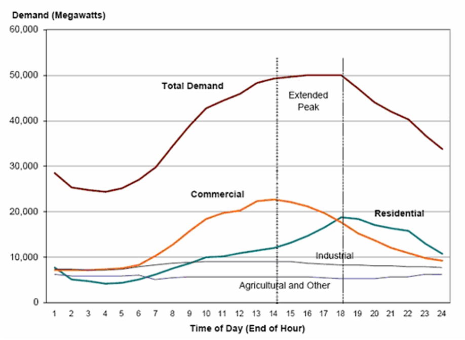

To begin Lecture Block 3, this mini-lecture provides an overview of the infrastructure data needed to assess systems’ current performance. There are various primary datasets such as supply, demand, capacity, design life, and carbon emissions that need to be collected to capture a clear picture of an infrastructure system.
Evaluating the status of current infrastructure systems is the first step in the evidence-based infrastructure development process (Adshead, Fuldauer, et al. 2018) (see Figure 3.1.1). Current infrastructure performance is evaluated based on needed service levels in a particular country. To do this, data on current infrastructure systems needs to be collected. The collected data enables the analysis of future infrastructure needs and informs infrastructure development strategies. The needed data covers key technical, social, economic, and environmental features of infrastructure systems. The following sections expand on each of these areas.

Figure 3.1.1: Evidence-based infrastructure development process (Adshead, Fuldauer, et al. 2018)
Infrastructure systems consist of supply and demand components. Supply infrastructure provides the specific infrastructure service, while demand elements drive how much of the service is needed. Table 3.1.1 below illustrates examples of supply infrastructure in each of the networked infrastructure systems.
| Networked infrastructure system | Supply infrastructure |
|---|---|
| Electricity |
|
| Transport |
|
| Water (including wastewater) |
|
| Waste |
|
| Digital communication |
|
Table 3.1.1: Inexhaustive examples of supply assets of network infrastructure systems (Adshead, Roman, et al. 2018; Adshead et al. 2020; Malmodin and Lunden 2018)
Further, the most common demand components include domestic, commercial, industry, and system losses. Specific areas within these categories may also be considered. For instance, for the waste sector, demand data may be collected based on the disposal protocol for different materials. For example, data may be disaggregated based on the following categories: hotels, cruise ships, agriculture, biomedical, pharmaceuticals, tires, fiberglass, and asbestos.
It is important to capture the capacity of each infrastructure system. Capacity here refers to the quantity of service each infrastructure component can supply. The units used to capture the capacity of each infrastructure system should be uniform. Table 3.1.2 below depicts applicable capacities and units in each networked infrastructure system.
| Networked infrastructure system | Capacity description |
|---|---|
| Electricity |
|
| Transport |
|
| Water (including wastewater) |
|
| Waste |
|
| Digital Communication |
|
Table 3.1.2: Examples of infrastructure capacity descriptors in networked infrastructure systems (Adshead, Roman, et al. 2018)
It is also important to note the design life or lifespan of each infrastructure component in order to assess their operation statuses. For instance, a diesel electricity generation plant may provide a significant portion of electricity to a community but be aged and in need of replacement within two years. The facility would therefore be a critical consideration when projecting future infrastructure needs.
The number of people served by infrastructure system assets indicates the coverage of that particular service. Comparing the percentage of population with access to services to national targets illuminates the gaps that need to be filled and the underserved proportion of the population (given the location of the service provision is also specified). This knowledge is needed to design country specific infrastructure development strategies. For instance, a country may be 100% electrified but has wastewater treatment facilities that only cover its capital. This country therefore would allocate more resource towards improving the wastewater system.
The capital and expenditure costs of infrastructure assets are needed to evaluate the cost-effectiveness of varying infrastructure development strategies. For instance, varying types of electricity interventions have different price points over their lifespans. For example, geothermal energy generation plants have high initial costs but high energy generation at low implementation costs over a long design life, while a diesel energy generation plant may initially cost less but incur high fuel bills over its lifespan. Research has shown that long-term infrastructure strategies that maximise sustainable development and consider the Paris Agreement are the most cost-effective (Adshead et al. 2021). Such strategies take advantage of interdependencies between infrastructure systems as well as low-hanging fruit such as improving system efficiency.
The carbon emissions from each infrastructure component should be estimated to capture the contribution of the infrastructure systems to climate change. Other environmental attributes of infrastructure systems, such as landfill versus recycling and conventional vehicles versus electric vehicles, are captured in the data on systems’ technical features.
Estimating carbon emissions can be approached via a variety of methodologies. Data on the carbon intensity of infrastructure assets may be obtained from national greenhouse gas inventories whose methodologies should reflect the recommendations and guidelines of the United Nations Framework Convention on Climate Change.
This mini-lecture provided an overview of the data required to assess the current performance of infrastructure systems. The data required, inclusive of technical, social, economic, and environmental components, is needed to evaluate infrastructure gaps, project future needs, and ultimately devise infrastructure development strategies in line with national priorities and global agendas such as the Sustainable Development Goals and the Paris Agreement.